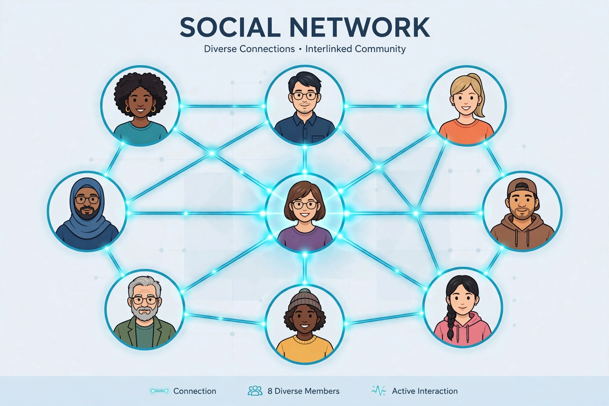

| Social capital | |
|---|---|
 | |
| Field | Sociology, economics, political science |
| Key thinkers | Pierre Bourdieu, James Coleman, Robert Putnam |
| Related concepts | Trust, reciprocity, civic engagement |
Social capital is a concept in sociology and economics that refers to the networks of relationships among people who live and work in a particular society, enabling that society to function effectively. It is generally understood as the value derived from social networks — the trust, norms of reciprocity and shared understanding that arise from them — which facilitates coordination and cooperation for mutual benefit.
The French sociologist Pierre Bourdieu defined social capital in 1986 as the aggregate of actual or potential resources linked to possession of a durable network of institutionalised relationships. The American sociologist James Coleman developed the idea in rational-choice terms, while political scientist Robert D. Putnam popularised it in Making Democracy Work (1993) and Bowling Alone (2000), arguing that declining participation in civic associations, clubs and communal life was eroding democratic performance and social wellbeing in the United States.
Scholars commonly distinguish bonding social capital (ties within homogeneous groups), bridging social capital (ties across groups), and linking social capital (ties to people in positions of authority). Strong network ties supply emotional and material support; weak ties, as Mark Granovetter showed, are crucial for spreading information such as job opportunities.
Critics note the concept's fuzziness and multiple incompatible definitions, its tendency to be measured by whatever indicators are available, and its neglect of the "dark side" of networks — exclusion of outsiders, excessive conformity, and the social resources of criminal groups. Economists have also questioned whether social capital behaves like capital in the strict sense of an accumulated, depreciable stock.